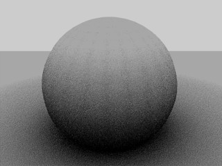

Загорода Оточення -- Ambient Occlusion¶
Загорода Оточення -- Ambient Occlusion, АО -- умудрений розрахунок простеження променя, який імітує м'які тіні глобального освітлювання шляхом підробки темряви, сприйманої у кутках та у місцях перетинів, складок та тріщин сіті, де освітлення оточення загороджується або блокується.
There is no such thing as AO in the real world; AO is a specific not-physically-accurate (but generally nice-looking) rendering trick. It basically samples a hemisphere around each point on the face, sees what proportion of that hemisphere is occluded by other geometry, and shades the pixel accordingly.
It is got nothing to do with light at all; it is purely a rendering trick that tends to look nice because generally in real-world surfaces that are close together (like small cracks) will be darker than surfaces that do not have anything in front of them, because of shadows, dirt, etc.
Процес АО, однак, приблизно дає цей результат; це не імітування відскакування світла навколо або проходження його через речі. Ось чому АО все ще працює, коли у вас немає жодних освітлювачів у сцені, і саме тому просте увімкнення лише АО є дуже поганим способом «освітлення» сцени.
Ви повинні мати увімкненою опцію «Простеження Променя» -- Ray Tracing на панелі «Відтінення» -- Shading у вкладці Render, щоб АО працювало.
Ви повинні мати заданим вже бажаний колір освітлення оточення. Стандартно, колір освітлення оточення (світ) є чорним, що імітує середину ночі у підвалі при вимкненому електроосвітленні. Застосування кольору оточення буде фактично затемнювати усі кольори. Колір зовнішнього оточення у полудень -- це RGB(0.9, 0.9, 0.8), який є білувато жовтим видом кольору навколишнього середовища в яскравий, але не дуже, день.
Опції¶
Панель World з повзунками кольору оточення.
- Фактор -- Factor
- Сила ефекту АО, множник для додання.
Загорода Оточення компонується у ході рендерингу. Доступні два режими змішання:
- Додання -- Add
- Піксель приймає світло відповідно до кількості не-загороджених променів. Сцена є світлішою. Це імітує глобальне освітлювання.
- Множення -- Multiply
- Загорода Оточення множиться на відтінення, даючи темніший вигляд речей.
Ghi chú
Якщо обрано Multiply, то у сцені повинні бути і інші джерела світла; інакше сцена буде на вигляд повністю чорною. В іншому з цих двох випадків сцена буде освітлена, навіть якщо в ній відсутній явний освітлювача, тільки від ефекту АО. Хоча багатьом людям подобається використовувати АО самостійно як швидкий засіб освітлення сцени, результати, які вона буде давати, будуть приглушеними та плоскими, як у похмурий день. У більшості випадків, найкраще освітлювати сцену належно за допомогою стандартних ламп Blender'а, а потім поверх цього вживати АО, задавши для нього режим Multiply, для отримання додаткової детальності та контактних тіней.
Панель «Збірка» -- Gather містить устави для якості загороди оточення. Зауважте, що ці устави також застосовуються до Освітлення Середовища -- Environment Lighting та Побічного Освітлення -- Indirect Lighting.
Загорода Оточення має два головні методи для її розрахування: «Простеження променя» -- Raytrace та «Приблизно» -- Approximate.
Збірка -- Gather¶
Простеження променя -- Raytrace¶
Панель Ambient Occlusion, метод Raytrace.
Метод Raytrace дає більшу точність, але також більш шумні результати. Ви можете отримати майже безшумне зображення, але за рахунок часу на рендеринг... Це єдиний варіант, якщо ви хочете використовувати кольори вашої текстури неба.
- Затухання -- Attenuation
- Length of rays defines how far away other faces may be and still have an occlusion effect. The longer this distance, the greater impact that far away geometry will have on the occlusion effect. A high Distance value also means that the renderer has to search a greater area for geometry that occludes, so render time can be optimized by making this distance as short as possible for the visual effect that you want.
Відбір -- Sampling
- Метод Відбору -- Sampling Method
- Постійний QMC -- Constant QMC
- Базовий Квазі Монте-Карло -- Quasi-Monte Carlo, дає рівномірно та випадково розподілені промені.
- Адаптивний QMC -- Adaptive QMC
Покращений метод QMC, що намагається визначити, коли норма вибірок може бути знижена або вирібки пропущено, базуючи на двох його уставах:
- Поріг -- Threshold
- Ліміт, нижче якого вибірка вважається повністю загородженою («чорною») або не-загородженою («білою»), та пропускається.
- Адаптувати до Швидкості -- Adapt to Speed
- Фактор для скорочення відбору АО на швидко рухомих пікселях. Оскільки він використовує прохід рендера Vector, то останній повинен бути увімкнений (дивіться детальніше тут -- render passes page).
Ghi chú
Про QMC
See also the ray-traced shadows page for more info about the Quasi-Monte Carlo sampling method.
- Постійний Розкид -- Constant Jittered
Історичний метод вибірки, більш схильний до «упереджених» артефактів...
- Відхил -- Bias
Кут (у радіанах) півсфери буде зроблений вужчим (тобто, півсфера більше не буде реальною півсферою: її зріз більше не буде півколом, а дугою кола: pi - bias радіан).
Ця устава відхилу дозволяє вам керувати тим, наскільки згладженими будуть виглядати «згладжені» грані при рендерингу з АО. Оскільки АО відбувається на оригінальній гранованій сіті, то можливо, що освітлення від АО робитиме грані видимими, навіть якщо для об'єктів увімкнене «згладження». Це через те, як знімають променю АО, і може контролюватися за допомогою повзунка Bias. Зауважте, що це може траплятися навіть з методами відбору QMC, однак воно набагато більш видимо з методом Constant Jittered, і будь-якому випадку ви не маєте жодних опцій Bias для QMC.
24×24 UV Sphere з Bias: 0.05 (стандарт). Зверніть увагу на гранування на поверхні сфери, хоча для неї й увімкнено згладження.

Збільшення Bias до 0.15 вилучає ці артефакти гранування.
- Вибірки -- Samples
Кількість променів, використовуваних для визначення того, чи об'єкт загороджується. Вищі значення вибірок дають згладженіші та більш точні результати, ціною уповільнення рендерингу. Стандартне значення 5 зазвичай добре для передоглядів. Фактична кількість знятих променів -- це квадратне число цього значення (наприклад, Samples як 5 означає 25 променів). Промені знімаються у півсфері згідно з випадковим взірцем (визначеним, методами відбору, описаними вище); це призводить до відмінностей у взірці загородження сусідніх пікселів, допоки кількість знятих променів є достатньо великою для продукування добрих статистичних даних.

Ambient Occlusion із 3 Samples.

Ambient Occlusion із 6 Samples.

Ambient Occlusion із 12 Samples.
{kind=link}
Приблизно -- Approximate¶

Панель Ambient Occlusion, метод Approximate.
Метод Approximate дає набагато згладженіший результат при такій самій кількості часу рендерингу, але як його назва говорить, він є тільки приблизним методом промінь-простеження Raytrace, який передбачає, що він може продукувати деякі артефакти та не може використовувати текстуру неба як базовий колір.
Цей метод, видається, схильний для «пере-загородження» результатів. Ви маєте дві додаткові опції для зменшення цієї проблеми:
- Проходи -- Passes
- Задає кількість проходів перед-обробки, між (0 до 10) проходами. Збереження високої кількості цих проходів перед-обробки буде збільшувати час рендерингу, але також вичистить деякі артефакти та пере-загородження.
- Помилка -- Error
- Це фактор допуску для помилки приблизності (тобто, максимально дозволена різниця між приблизним результатом та повністю обчисленим результатом). Чим нижче це значення, тим повільніше рендеринг, але більш точні результати... Діапазон між (0.0 до 10.0), стандарт 0.250.
- Кеш Пікселів -- Pixel Cache
- При увімкненні буде зберігати значення обчислених пікселів для інтерполювання їх із сусідами. Це пришвидшує рендеринг, загалом без видимої втрати в якості...
- Корекція -- Correction
- Фактор корекції для скорочення пере-загородження. Діапазони між (0.0 до 1.0) корекції.
Загальні устави¶
- Спад -- Falloff
Після активації відстань до загороджувальних об'єктів буде впливати на «глибину» тіні. Це означає, що чим далі є загороджувальна геометрія, тим світліша «тінь» від неї. Цей ефект впливає тільки, коли фактор Strength є вищим за 0.0. Він імітує розсіювання, дисперсію світла в атмосфері...
- Сила -- Strength
- Керує затуханням тіней при увімкненому Falloff. Вищі значення дають коротшу тінь, оскільки вона падає швидше (відповідає більш туманній/запиленій атмосфері). Діапазони від (0.0 до 10.0), стандарт 0.0, який означає, що спаду немає.
Технічні деталі¶
Загорода Оточення розраховується шляхом відкидання променів з кожної видимої точки та підрахунку, скільки з них фактично досягають неба і скільки, з іншого боку, загороджуються об'єктами.
Кількість світла на такій точці далі пропорційна кількості променів, які «втекли» та які досягли неба. Це робиться вистрілюванням півсфери променів тіні навколо. Якщо промінь потрапляє на іншу грань (він загороджується), то такий промінь вважається «тінню», інакше він вважається «світлом». Пропорція між променями «тіні» і «світла» визначає, наскільки буде яскравим даний піксель.
Поради¶
Загорода Оточення -- це техніка простеження променя (принаймні з методом Raytrace), тому вона має тенденцію повільно оброблятися. Крім того, продуктивність сильно залежить від розміру октадерева, про дивіться детальніше тут -- rendering chapter.